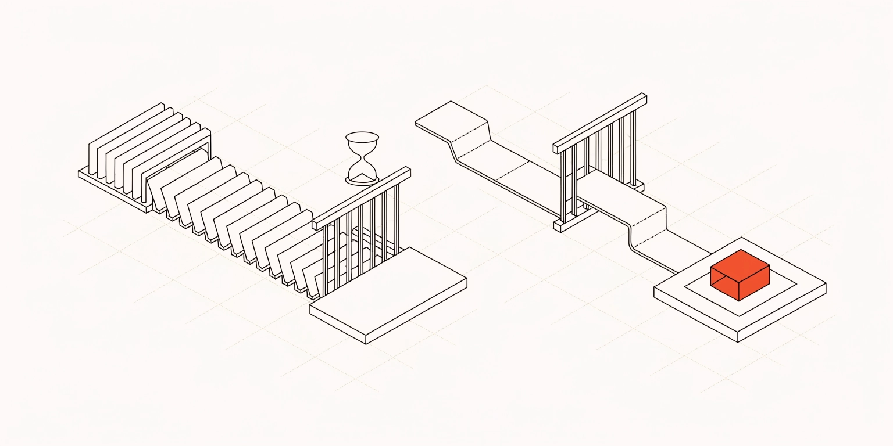
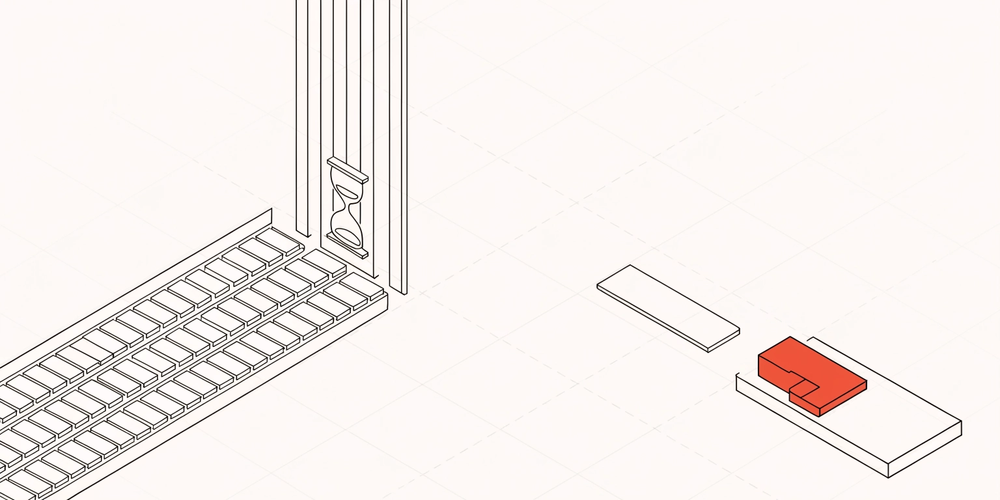
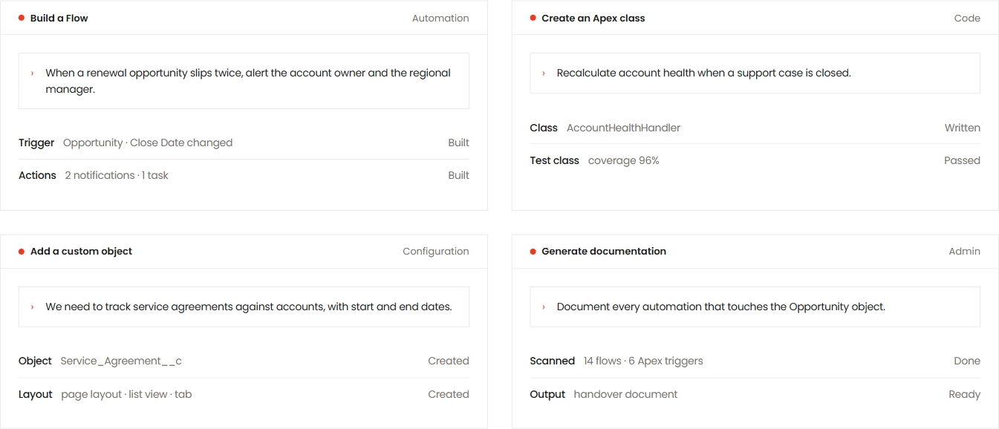
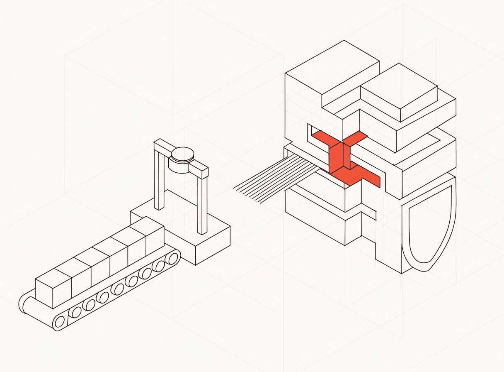
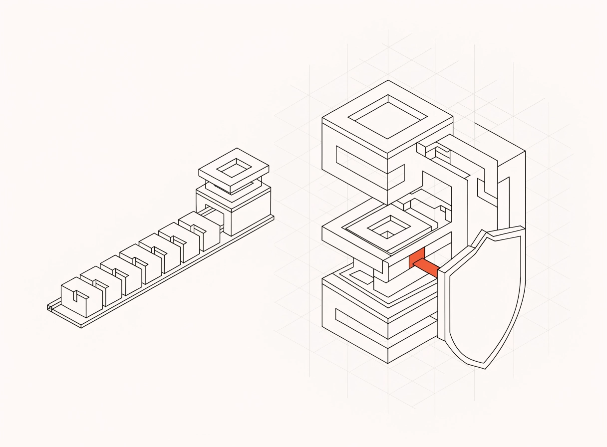

Две секции страницы NOVA for Salesforce. У каждой — как сейчас и варианты. На страницу ничего из этого не поставлено — жду выбора или комментариев.
Уже на странице: герой с иллюстрацией, конвейер How it works по левому краю, Product proof — лента «запрос → результат» (вариант A), Expertise — кадр 1. Новое на выбор — The problem (первый блок ниже).
Сейчас справа от текста и тегов пусто. Кадр невысокий (2 : 1), чтобы секция не вытягивалась: слева копится очередь запросов перед закрытыми воротами, справа один запрос проходит напрямую и становится готовым модулем. Сравнение «старый путь / NOVA» остаётся под этим рядом без изменений.
Traditionally, even relatively straightforward changes can end up in a development backlog.
With NOVA for Salesforce, you describe what you need. The platform translates that intent into Salesforce configuration, automation or code. You review it. You stay in control. Then you deploy.

1 — рекомендую: слева очередь запросов перед воротами с песочными часами, справа один запрос проходит напрямую к красному модулю. Композиция уравновешена и хорошо ложится в низкий кадр.
C:\Users\fartv\agents\WP-Elementor\projects\redorange\assets\_src\board-illu2\problem-1-bgfix.png
2 — очередь и ворота обрезаны краями кадра, композиция разваливается.
C:\Users\fartv\agents\WP-Elementor\projects\redorange\assets\_src\board-illu2\problem-2-bgfix.pngСейчас четыре панели-экрана: бар, поле ввода, строки с техническими именами и статусами. Чтобы понять смысл, их нужно читать. Суть секции проще — «вы пишете обычными словами → NOVA делает вот это». Оба варианта показывают ровно эту пару и больше ничего.

“When a renewal opportunity slips twice, alert the account owner and the regional manager.”
A Flow with two alerts and a follow-up task“Recalculate account health when a support case is closed.”
An Apex class with tests, 96% coverage“We need to track service agreements against accounts, with start and end dates.”
A new object with its layout, list view and tab“Document every automation that touches the Opportunity object.”
A handover document covering 14 flows and 6 triggersНовая раскладка: теги «Where experience still decides» переезжают влево под текст, справа — иллюстрация. Сюжет: рутинные блоки NOVA обрабатывает сама, сложная конструкция (архитектура, интеграции, миграция, безопасность) остаётся специалистам. Ниже — как будет выглядеть секция и два кадра на выбор.
There will always be complex Salesforce projects. That work requires experience.
But much of the everyday work around Salesforce is structured, repetitive and increasingly suitable for AI-assisted development. NOVA handles more of that work so your specialists can focus on the decisions where specialists actually add value.
Where experience still decides
1 — рекомендую: слева конвейер с автоматической станцией (рутина), справа сложная конструкция с красным узлом и щитом (работа специалистов). Сюжет читается сразу.
C:\Users\fartv\agents\WP-Elementor\projects\redorange\assets\_src\board-illu2\exp-1-bgfix.png
2 — рутинная часть читается хуже, красный акцент маленький.
C:\Users\fartv\agents\WP-Elementor\projects\redorange\assets\_src\board-illu2\exp-2-bgfix.png